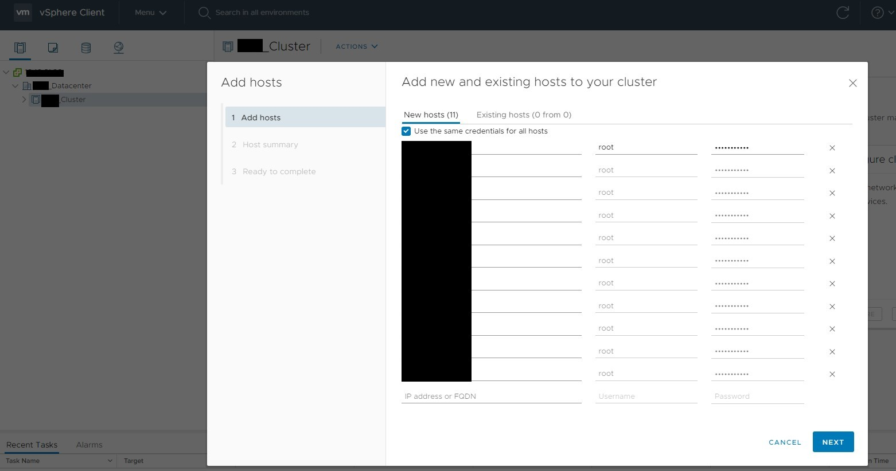

VCSA 7.0 (vCenter) 安裝教學
Contents
先前準備
建議在同一台 ESXi host 上開一台 Windows 10 主機，並將 .iso 丟入這樣在上傳會比較快。
將 .iso 掛載 or 解壓縮後可以看到安裝所需檔案:
- vcsa-ui-installer: 圖形化安裝精靈 (有 Windows、Mac 與 Linux 版本)
- vcsa-cli-installer: 文字命令列安裝，一樣三個平台都有
- vcsa: OVF 檔案存放目錄
安裝步驟
本次教學採用 OVA 建立 VCSA
- 登入 ESXi host 並且點選建立虛擬機，選擇 從 OVF 或 OVA 檔案部屬虛擬機器
- 選取 OVA 檔案 並且輸入虛擬機名稱
- 選擇儲存區 (Storage Pool)
- 選擇部屬類型 (使用 GUI 部屬會直接在下面比較差異)，選擇 Medium 、磁碟精簡佈建、自動開啟電源 以及
Port Group
- 網路設定 DNS Server 直接留空 ( 2022.12.21 註: DNS 不應該留空，應當配置 )
- SSO 以及
root密碼 (因為 VCSA 底層也是 Linux distrobution 之一的 photon)
- 最後留空的部分
- Summary
- 部屬完成後畫面會顯示這樣，要求你透過 https://x.x.x.x 進行 Stage 2 的設定
- vCenter IP:5480 > SSO 登入 VMware vCenter Server Management
- vCenter IP > 非 SSO 登入 vSphere Client
- 網頁畫面
- 點選 Set Up 輸入系統帳號密碼
- Stage 2
▲ 開啟 SSH 服務 ( 2022.12.21 更新: 用完請關閉 SSH 服務，除非需要建立 VCSA HA。校時的部分也推薦使用 NTP server111 )
- SSO 詳細設定
- 取消勾選 CEIP 計畫
- Stage 2 Summary
- 灌到 68% 出現這個錯誤，使用 SSH 連入。 註: 可以先 Ctrl + F5 重新整理網頁試試看
根據官方這篇 QA Stopping, Starting or Restarting VMware vCenter Server Appliance 6.x & above services (2109887) 即可排除狀況
- 網頁成功出現
- 使用
Administrator@...登入
- 新增 License
- Assign license for Asset
- (這次勾選到 HA 有爆炸，因此實驗中) 使用 Cluster 批次加入 ESXi host

▲ SHA1 Fingerprint 的部分
▲ Summary
- 連結 LDAP (網路組開通主機政策)
設定 Time Zone
登入 VCSA
使用 [https://<VCSA_IP>:5480] 進入 VCSA 後臺管理介面，設定 Time zone 與 NTP server
其中 Time synchronization 有三種模式:
- Disable: 不同步
- Host: 與 ESXi 對時 (跟 VM Option 裡面勾選同步一樣)
- NTP: 跟指定 NTP server 對時
參考資料:
Author 老柯
LastMod 2021-01-27